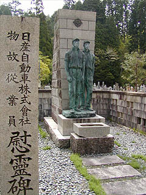
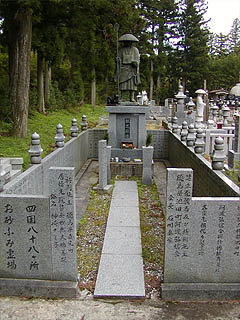
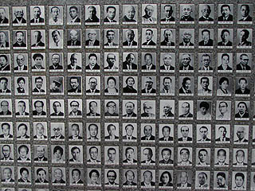

高野山奥の院（１）/和歌山県高野町
弘法大師が入定した真言宗の聖地、高野山である。日本を代表する宗教都市である。
そんな常人が近付けない雰囲気の漂う高野山であるがその一方で「え、何だこりゃ？」と思わず突っ込みを入れたくなるような物件も満載なのだ。
金剛峰寺の壇上伽藍もいいけど是非奥の院にも足を延ばしていただきたい。
そこには真言密教の聖域という仰々しい肩書きをもつ一面があるが、その裏面には人間の堪らなく深い業のようなものを感じさせてくれる物件が表裏一体となっている。
奥の院の入り口には霊園があり、その中には企業や団体の墓地や慰霊碑がかなり存在するのだ。
特に企業墓地は会社の宣伝かあ？と思わせる程自己主張が激しいモノが多く、聖地においてその商魂のたくましさというか自社アピール具合はひときわ目を引く。
というわけである晴れた日高野山詣でとあいなったのである。
大阪から電車に揺られていく。車窓は徐々に都心から郊外の風景へ、そして段々山深くなってくる。
終点の極楽橋駅に着く頃には杉の古木が林立する聖地らしい風景になってくる。ケーブルカーとバスを乗り継いで着いたのが高野山奥の院前。
奥の院までの最短コースを歩こうという訳だ。
いきなり奥の院に詣でるのもナンだが、美味しいところは最初に食べるタイプなものですから。
← 塔婆かと思ったら俳句が書いてありました・・・
奥の院は大きく分けて2つのエリアに分かれている。
手前が大霊園や大名の墓が並ぶ墓地エリア。奥が弘法大師入定の地である御影堂を中心とした聖域エリア。このふたつのエリアを総称して一般的には奥の院と呼んでいるらしい。
墓地のエリアは大名の墓がズラリと並ぶ本来の参道である道と公園墓地と呼ばれる新しく開かれた墓地の中を通って行く2ルートがある。
勿論迷わず公園墓地をチョイス。ヘンテコな企業墓地はこちらに密集しているからだ。
いきなりロケットがお出迎えである。新明和工業の企業墓である。ロケットのパーツでも造っているのであろうか？
それにしても聖域高野山の奥の院の墓地でしかも入口付近にいきなりロケットとは面喰らった。
お次は日本しろあり対策協会のしろあり供養碑。「しろあり やすらかにねむれ」ってアンタ・・・
別にシロアリが埋葬されている訳ではないよ。それじゃあ蟻塚になっちゃうからね。
福助の墓にはアノお馴染みのキャラが。
墓地の一画には大きなストゥーパがある。これは共同墓地みたいな感じでした。関西ではめずらしい黒い五輪塔がズラリと並ぶ様は壮観だった。
テトラポットとベアリングだと思います。多分。
動物供養。中央に仏像、その台座の周りには十二支の置き物が。大きさがまちまちなのは御愛嬌か。

日産自動車慰霊碑。作業着を着たブロンズ像が立つ企業戦士の慰霊碑。カルロス☆ゴーン氏はここの存在を知っているのだろうか？

霊園といっても墓地だけでなくこのように個人で作ったミニ霊場や観音像などもあり何でもアリの様相を呈している。
もともとここは墓地といっても納骨するような墓ではなく遺髪や遺骨の一部を分骨したりするタイプが多いそうだ。
従って墓地というより慰霊碑的な色合いが強く、かなり色々な形態の墓碑が多いのだそうだ。
動物2態。犬は人の墓より立派でした。右はキリンビール。

写真業界先賢萬霊之碑。写真業界といったらカメラマンなのだろうか。遺影がズラリと並んでいる。
この墓地に写真を使う方法というのは海外では良く見かけるが日本では珍しい。恐らく生々しいから敬遠されるのだろうが、そこは写真業界ですから。
これは楽書塚。墓地のイタズラ書きに心を痛めた人達が自由にラクガキを書いて下さいな、という訳でラクガキ専用の板碑を建てたもの。
発起人のひとりに落語家の柳家金語楼が名を連ねている。となりには花菱アチャコの碑が。
これは上島珈琲の企業墓の門柱。とにかく巨大な墓地だった。
お約束のコーヒーカップの中が気になってよじ登ってみたら・・・
おおお、ちゃんとコーヒーが入ってました。偉い！
この辺りから段々鬱蒼としてきて徐々に古い墓地が増えてくる。
林立する杉の古木の間を縫うようにして墓地が延々と続く。何本も角塔婆が奉納された墓地。一番大きな角塔婆は5〜6メートルはある。
角塔婆で囲われた墓地。角塔婆が壁になっている。屋根までかかっているので遠目に見ると完全に家化している。
というより建物にするために塔婆の数を調整して「発注」したのだろう。こんな家が近所にあったら凄いだろうなあ〜
耳なし法一の家バージョンみたいな。
そうこうしている内に企業墓地は少なくなってきて古い墓地が増えて来た。いよいよ高野山奥の院のコアな部分に近付いてきたようだ。
高野山(2)に続く
2003.5.
珍寺大道場 HOME